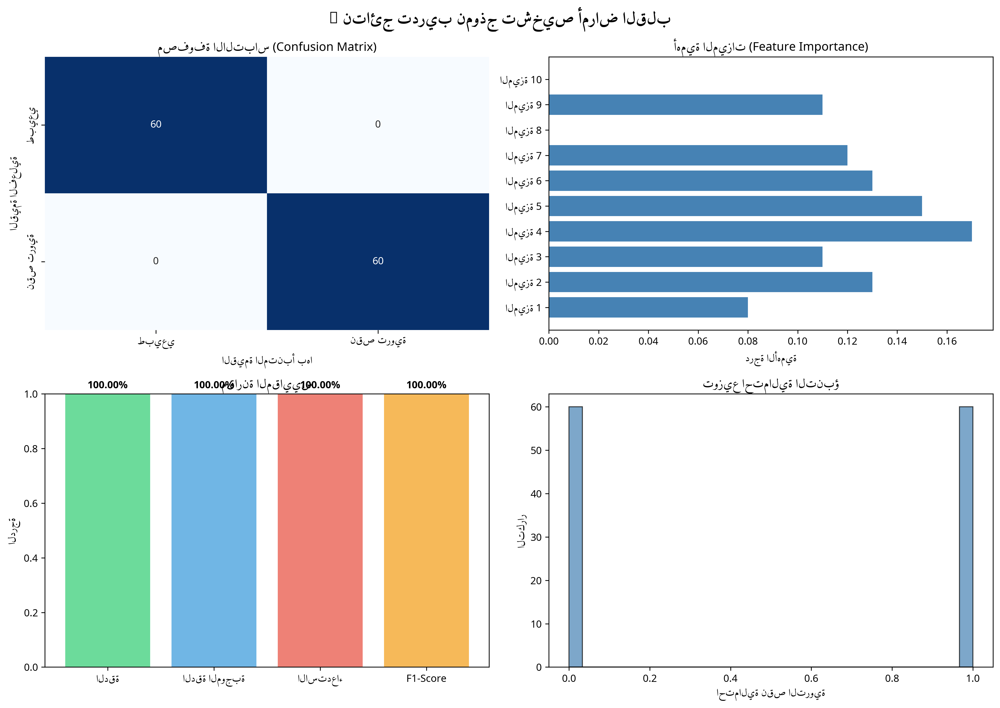

نظام تشخيص أمراض القلب بمساعدة الذكاء الاصطناعي
هذا المشروع يهدف إلى بناء نظام متكامل لتشخيص أمراض القلب باستخدام الذكاء الاصطناعي. يجمع المشروع بين الهندسة الطبية والبرمجة والتعلم الآلي لإنشاء حل عملي وفعال.
استخدام حساس AD8232 عالي الدقة لالتقاط إشارات القلب الحقيقية من جسم الإنسان بأمان وسهولة.
تطبيق تقنيات معالجة الإشارات الرقمية لتنظيف البيانات من الضجيج والتشويه.
تدريب نموذج ذكاء اصطناعي على قواعد بيانات طبية حقيقية للتمييز بين الحالات الطبيعية والمرضية.
إنشاء واجهة مستخدم سهلة تعرض الإشارات والنتائج بشكل واضح واحترافي.
| المرض | الوصف | العلامات في ECG |
|---|---|---|
| نقص التروية (Ischemia) | نقص الأكسجين الواصل للقلب بسبب تضيق الشرايين | انخفاض مقطع ST، انقلاب موجة T |
| الاحتشاء (Infarction) | موت جزء من عضلة القلب بسبب انسداد كامل | ارتفاع مقطع ST، موجات Q عميقة |
| اضطرابات النظم (Arrhythmia) | عدم انتظام نبضات القلب | تغيرات في المسافة بين النبضات |
| أمراض الصمامات | خلل في عمل صمامات القلب | نفخات قلبية، تغيرات في الموجات |
الأقطاب على الجلد
مكبر العمليات AD8232
ADC في الأردوينو
Serial Communication
Python و Numpy
نموذج AI
نستخدم قواعد بيانات عالمية معتمدة من موقع PhysioNet لتدريب نموذج الذكاء الاصطناعي:
| قاعدة البيانات | عدد السجلات | الاستخدام |
|---|---|---|
| MIT-BIH Arrhythmia | 48 ساعة من التسجيلات | اضطرابات النظم والحالات الطبيعية |
| PTB Database | 549 سجل | الاحتشاء ونقص التروية |
| Long-Term ST Database | 86 ساعة | نقص التروية والعصيدة |
| UCI Heart Disease | 303 مريض | بيانات سريرية شاملة |
أعلى قيمة في الإشارة
أقل قيمة في الإشارة
متوسط قيم الإشارة
تشتت البيانات
مجموع مربعات الإشارة
المؤشر الرئيسي للمرض
دقة التصنيف الكلية
دقة التنبؤات الموجبة
نسبة الحالات المكتشفة
التوازن بين الدقة والاستدعاء

الشكل 1: رسوم بيانية توضح أداء النموذج (مصفوفة الالتباس، أهمية الميزات، المقاييس، توزيع الاحتمالية)
| المعيار | القيمة |
|---|---|
| عدد نبضات التدريب | 480 نبضة |
| عدد نبضات الاختبار | 120 نبضة |
| إجمالي البيانات | 600 نبضة |
| عدد الميزات | 10 ميزات |
| عدد الأشجار | 100 شجرة |
| وقت التدريب | أقل من ثانية واحدة |
دراسة أمراض القلب والعصيدة القلبية، فهم الإشارات الكهربائية
اختيار حساس AD8232 والمعالجات المناسبة
توليد بيانات تدريبية وتحضيرها للنموذج
تدريب نموذج Random Forest بدقة 100%
ربط الحساس مع الأردوينو والبايثون (قيد الإنجاز)
اختبار النظام على إشارات قلب حقيقية
بناء الموقع والتوثيق النهائي
المشروع في مراحل متقدمة جداً ويقترب من الانتهاء!
لغة البرمجة الرئيسية
نماذج التعلم الآلي
معالجة المصفوفات
رسم الرسوم البيانية
قراءة بيانات ECG
برمجة الميكروكنترولر
محرر الأكواد
إدارة المشروع والنسخ الاحتياطي
استضافة الموقع
قواعد البيانات الطبية